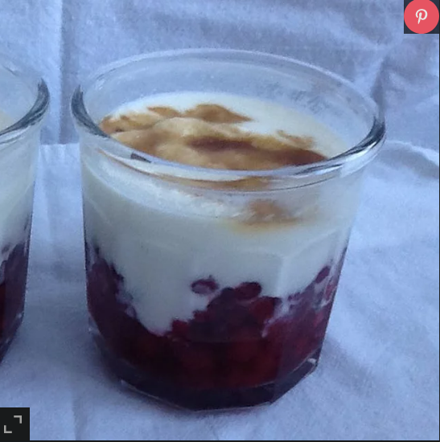

Easy Three Ingredient Raspberry Dessert

This is one of my favorite raspberry desserts - it only takes minutes to make but you need to make it in advance. You can use any size glass for the dessert. Make sure you use full fat Greek yogurt or another plain yogurt with plenty of fat content. It's a dessert after all.
Per Serving: 169 calories; protein 5.1g; carbohydrates 20.6g; fat 7.5g; cholesterol 16.9mg; sodium 53.2mg.
Ingredients
- unsweetened raspberries, thawed
- unsweetened raspberries, thawed
- ½ cup brown sugar
Directions
- Distribute frozen raspberries amongst 8 small glasses. Add 2 to 3 tablespoons of Greek yogurt to each glass and sprinkle a thick layer of brown sugar over each. Refrigerate uncovered for 24 hours so sugar crystallizes.